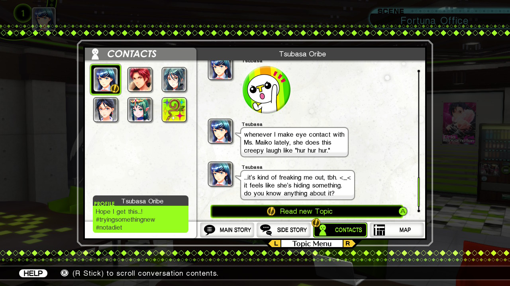

1game1week - Week 37 (9/10/25) - Tokyo Mirage Sessions #FE Encore
Hey all! It's week 37! (9/10 -> 9/17)
Good news! I've successfully beaten enough games for me to be comfortable with going on my work trip later this month. I think I phrased that weirdly, because it's not like I have much of a choice anyway. I guess what I'm trying to say is that I have games queued up for Weeks 38 and 39, which covers all of September.
It's kind of crazy, coming this far... when I first tried 1g1w in 2022, I found myself unable to play all that much. I wonder why. Could it be that I was so new at my job, that I didn't feel comfortable? Could it be work stress? Could it be that I wasn't living alone at the time? I don't really know...
In any case, it's really nice to be able to play games without any problems. In fact, today's game is one I dumped over 40 hours into. It's really nice that I'm still able to get through long RPGs like this, even while employed / stressed / living alone / a bit depressed.
Oh, yeah... found a really large screw lodged into one of my car's rear tires a couple days back. After the initial "this is gonna be so expensive" freakout, getting it fixed ended up being free due to the tire having warranty. I'm surprised they last that long, I replaced my tires back in Feb. of last year.
The tire shop was really friendly, which weirdly enough I've started to not expect from chains. Although, they had a big hole in the side of the building (covered by wood planks). There was a picture of a car in the middle of the store, so I guess that explains it. Apparently an elderly gentleman lost control and just drove right into the store.
I was told no one was harmed! Which is great.
Anyways!
New games from 9/3 -> 9/9:
None! (Total 13)
Currently, my backlog is at +6 (lower is better, -4 from last week).
And onto 1g1w. Once again, a game is considered "beaten" if I've accomplished the main objective of the game.
GAME: Tokyo Mirage Sessions #FE Encore
PLATFORM: Nintendo Switch
GENRE: RPG
STARTED ON: 8/26
BEATEN ON: 9/3
TOTAL PLAYTIME: 41 hours and 55 minutes (tracked via Nintendo Switch Parental Control App)
I tend to not care all that much about stuff like resolution or framerate. Of course, it's really nice when a game runs well. Sometimes hardware just gets in the way, so I understand.
However... Tokyo Mirage Sessions #FE Encore, a 2020 port of a 2015 game played in 2025 in a console two console gens after it originally released runs on Switch 2 at a native 720p, 30fps.
I'm not saying, "that's unacceptable!" or, "literally unplayable!", it's just that it seems oddly lazy, especially for an enhanced port. I can completely understand the Wii U not having the resources to handle anything more, but... I'm decently sure the Switch does. If not, the Switch 2 definitely does (although there's no patch, and there will be no patch for it to take advantage of those resources).
Again, it's not that it's a reason to dislike the game. It just seemed bizarre.
Outside of actual performance, the game is pretty run of the mill RPG. It's really just Shin Megami Tensei combat with the added fun of Sessions instead of Press Turn mechanics or One More. Essentially, hit an enemy's weakness and a party member will do a light to medium attack automatically. Then, another party member will join in, until the chain is over. While Sessions are cool, over the course of the 40 hours of gameplay, it gets a bit annoying to have the entire party join in for attacks.
At the end of the game, for example, you have eight party members. If you have a full chain Session with all eight party members, it takes roughly 10 to 15 seconds for the chain to end, for every single attack you do that hits a weakness. This is also with Fast Session enabled, which... well, it's self-descriptive.
Skills are learned through weapons crafted from enemy drops and rewards from having long Sessions. The game tries to be helpful by telling you whenever you have a new weapon available for you to craft. There's also passive abilities, which are crafted with Session rewards and "Performa", which are either treasure drops or rewards for character level-ups.
It's really not the hardest game in the world. It had some moments where it gets a little bit annoying, but it's nowhere in the neighborhood of difficulty of a "proper" Shin Megami Tensei title. My guess is that it probably wanted to appeal more to Persona / Fire Emblem fans so making the combat simpler and easier makes for an easier gateway.
There is some weirdness in combat. Not having the ability to switch roles for the main character makes a couple fights where the usual support role character becomes the main offense (elemental weaknesses etc), makes the main character a little useless in that particular fight. Maybe it's just how I built him, but it's not like he has the best support skills from his Carnages (weapons).
Oh, the game respecting the weapon triangle was really funny. Enemies typically had a lance, axe, or sword somewhere in their design (or their names had the corresponding FE class, such as Myrmidon), so attacking with the weapon that wins against the enemy's in the FE weapon triangle was the weakness.
You have two types of characters: humans or Mirages. Humans are just OCs for the story, and Mirages are characters from either Fire Emblem Shadow Dragon / Mystery of the Emblem and Awakening. There's also cameos from other character in the series. The story isn't really anything to write home about, but it's entertaining enough. Some of the original characters are surprisingly really charming, and I was a big fan of Touma as well as Kiria.
My only gripe about characters in this game is that they just don't shut up. In the game, there's this smartphone menu called Topic, where the characters text you during gameplay. And they get really annoying.
Enter a dungeon, get a text, leave a dungeon, get a text, interact with an NPC, get a text, heal at a vending machine, get a text. Every single time. Half of the texts are random character quirks, half of the texts are just "oh no!!! we need to help this guy!!!". If we compare it to something like Persona, it's the equivalent of party members texting you asking to go to a dungeon. Except it's not daily and easy to ignore, it's every few minutes and there's a big icon at the top right of your screen telling you to check it.
A lot of the dialogue in these texts just felt like random Tweets, so it felt weird. Like, why are you texting me about someone ghosting you? Subtweet about it, like a normal person.
I mentioned earlier that every time a new Unity (crafting) was available to you, you'd also get a text. Which, paired with my comment about how annoying texts are, can get really, really annoying.

I'll give the game this: it might just be part of the Wii U vs. Switch versions. In the Wii U version, it was probably a lot easier to ignore or just continue, since Topic used the Gamepad screen and wasn't a dedicated menu mapped to a button like on Switch. I can't quite verify that though, since I never got past the prologue in the Wii U version.
Speaking of which, I've actually started Tokyo Mirage Sessions three or four times, not including this time. Probably twice in the Wii U version, probably twice in the Switch version. Maybe those times, I just wasn't ready for an RPG, but it's nice that I was finally able to get one of them off my backlog.
Honestly, though, the game was perfectly fine. Not the most groundbreaking story, but definitely had some moments and was decent enough to be entertaining. Combat could've been a little better polished, but it wasn't by any means bad.
I do think that some polishing could be done to bring the game to a nicer resolution and framerate. With current hardware, like Switch 2, this game would definitely get a lot of benefits from a boost. With how pretty the game's colorful aesthetic is, it'd be really nice if we had a little more eye-candy.

Thanks for reading! If you need to contact me for any reason, please feel free to email me at aru@hoshikawa-aru.com.